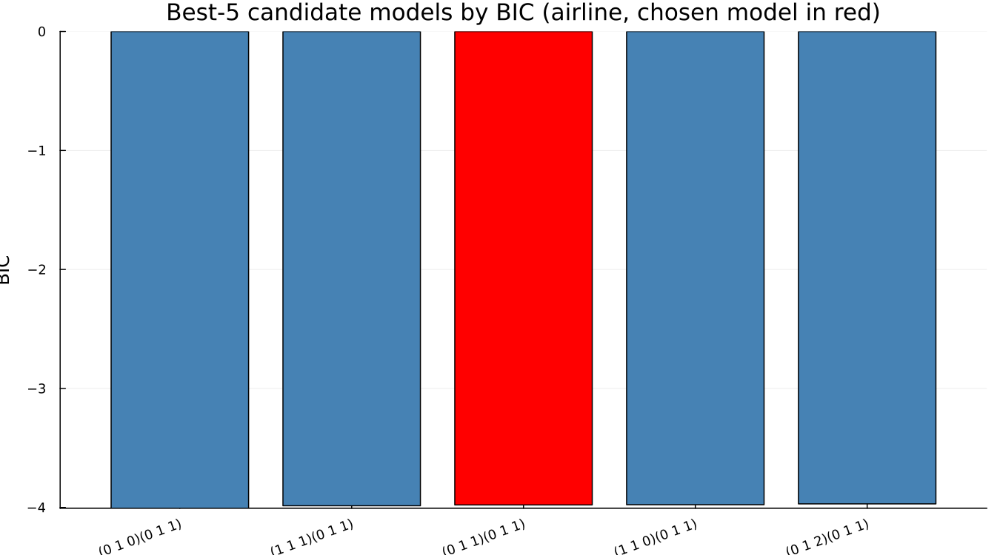
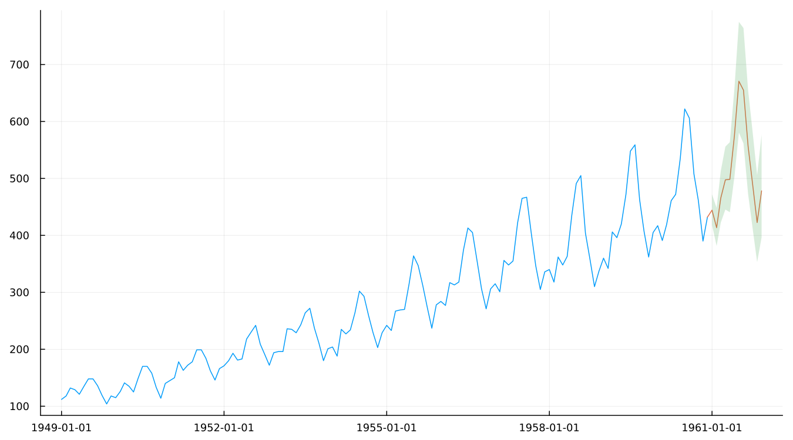

13. Model Selection and Forecasts
13.1 How automdl chooses
automdl is often assumed to simply pick whichever candidate model minimises an information criterion. On the canonical airline spec, the five candidates automdl actually considered say otherwise:

1. (0 1 0)(0 1 1) BIC -4.007 <- best BIC
2. (1 1 1)(0 1 1) BIC -3.986
3. (0 1 1)(0 1 1) BIC -3.979 <- the model actually chosen
4. (1 1 0)(0 1 1) BIC -3.977
5. (0 1 2)(0 1 1) BIC -3.970The chosen model ranks third, not first. (0 1 0)(0 1 1) has the best raw BIC and is not what automdl settled on. The best-BIC candidate is identified at an early stage and may then be rejected downstream, after estimation and further diagnostic checking — fivebestmdl exists specifically to show what was considered, not only what won, and this is exactly why. It is worth noticing, too, that all five candidates sit within 0.04 of each other: with a spread this narrow, treating the specific ranking as decisive would overstate how confidently the data distinguishes between them.
The model X-13 lands on, (0 1 1)(0 1 1), is the same order Box and Jenkins fitted to this exact series by hand in 1976. X-13's automatic procedure arrives at it independently, by an altogether different route.
BIC values are only comparable across models fit to the same differenced data. fivebestmdl's own candidate list holds the regular and seasonal differencing orders (d and D) fixed across all five for exactly this reason — comparing a BIC computed after one differencing order against a BIC computed after a different one is not a meaningful comparison, whatever the two numbers happen to say.
13.2 Forecasts
Chapter 9 used forecasts as a means to a better trend filter. Here they are the point:

forecast and forecastplot both work directly off a fitted spec — level controls the prediction interval width, and changing it forces a re-run, since the interval is computed by the binary itself rather than derived afterward from a fixed model.
13.3 Freezing the choice
An automatically selected specification is a moving target: re-run the same automatic spec after a new month of data arrives, and automdl, outlier and aictest are all free to choose differently than they did last time — a different ARIMA order, a different outlier list, even a different transform. static resolves an automatic spec's choices into an explicit, fixed one, exactly as Getting Started chapter 4 first introduced. Publishing from a frozen, static specification rather than re-running the fully automatic one every period is precisely what keeps a published series' methodology from silently drifting beneath it — Chapter 20 returns to this same idea, formally, as one of the real levers available should an adjustment turn out to be unstable.
See also: Getting Started chapter 4 for static()'s original introduction. Chapter 9 for forecasts used as a means rather than an end. Chapter 20 for freezing a specification as a stability lever.